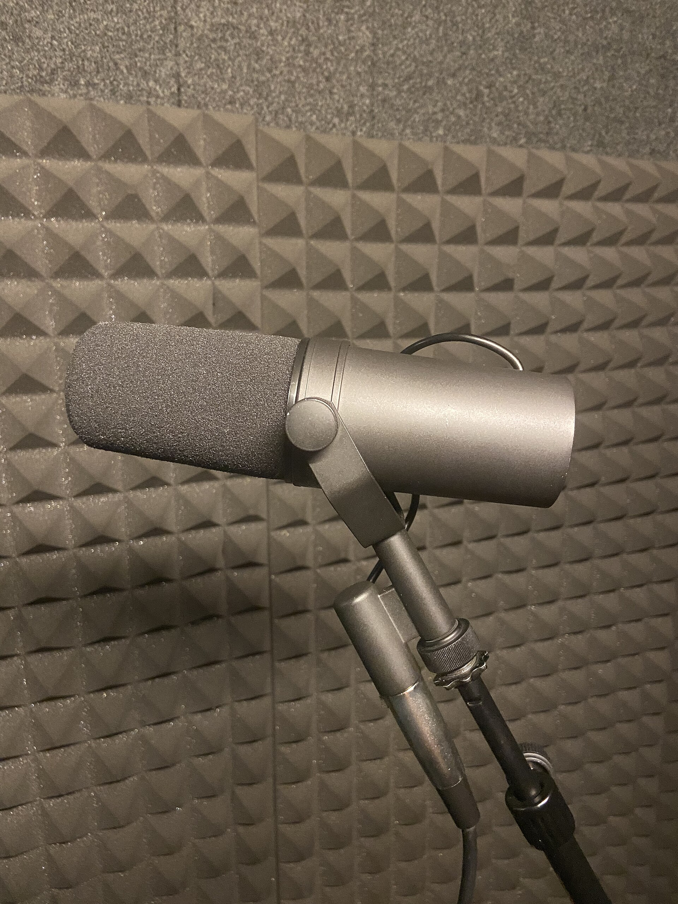
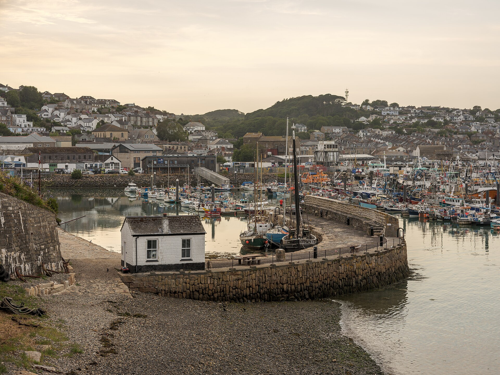

A whole harbor, on 88.4.
A volunteer station on Pier 9. The studio opens on 22 November.
Doors 11:00 to 18:00. Last entry 17:30. Step-free access.
Harbor Radio
Pier 9
88.4
FM
Saturday, 22 November
Open day 11:00 to 18:00
The day, as it airs.
Saturday runs from 06:00 to midnight. Choose a block to read the show.
06:00 to 09:00
Harbor Breakfast
with Mara Voss
Coffee, the tide and the first ferry. Mara opens the line at 06:30.
The shows that make the week.
Four regulars. The rest of the week is volunteers.
-
Mon to Fri06:00
Harbor Breakfast
Mara Voss
Coffee, the tide and the first ferry. A record before seven.
-
Tue09:00
The Long Pier
Eli Chen
One guest, one walk from the lock gate to the breakwater.
-
Thu13:00
Salt & Signal
Nia Okafor
Records from the water, plus the shipping forecast.
-
Fri18:00
Night Ferry
Tomás Reyes
Dub, low light and the last boat in.


One room, two microphones, a window on the quay.
The studio is the old harbourmaster’s office at the end of Pier 9. One window looks across the ferry lane, the other into the room.
- Getting here
- Harbour station, 8 minutes on foot.
- Step-free route
- A lift reaches the studio door.
- Inside
- One desk, two mics and an accessible WC.
Come and see how it is made.
No booking needed. Last entry is 17:30.


Pier 9, Old Fish Quay
Portsmouth
Access questions? Write to the station.
Email the station| Time | What | Where |
|---|---|---|
| 11:00 | Doors and coffee | Quay door |
| 11:30 | Studio tour | Studio A |
| 13:00 | The Long Pier, recorded live | Studio A |
| 15:00 | How a show gets made | Desk |
| 17:00 | Last entry | Quay door |